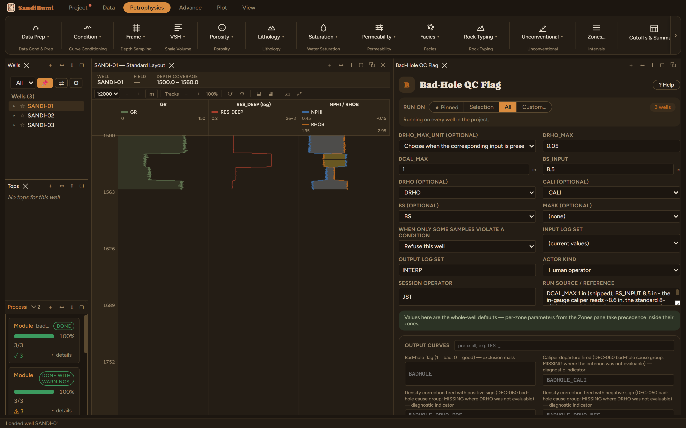

Bad-Hole QC writes BADHOLE, the flag the rest of the interpretation masks
on: 1 where the borehole departs from gauge or the density correction is too
large to trust the porosity logs, 0 in good hole, MISSING where no criterion
could be evaluated at all. Run it early, before any module whose inputs suffer
in washouts, then pass BADHOLE as the Mask on those runs so flagged samples go
missing instead of polluting results.
The physics
Pad tools read the formation through whatever stands between pad and rock.
Where the hole washes out, the density tool reads mud, the neutron reads
borehole fluid, and both porosities inflate. Two symptoms are measurable:
Caliper against bit size: |CALI − bit| beyond a tolerance means
the pad has lost the wall. Bit size comes from a BS curve where the
delivery carries one, or from your BS_INPUT entry when it does not.
Density correction DRHO: the tool's own confession. A large
|DRHO| means the spine-and-ribs correction worked hard, and past a limit
the corrected reading is no longer trustworthy.
Each criterion is evaluated only where its inputs exist, and the
_EVALUATED companion curves record that fact per sample, so a
reader of the flag always knows which half of the QC actually ran.
The picks and why
DCAL_MAX 1 in (shipped): the caliper tolerance. Tighten it
and the flag reaches into the washout shoulders; loosen it and marginal
hole passes as good. Run live on these wells: at the shipped
1 in, 612 of 1185 samples flag; tightened to 0.5 in the
count rises to 626, picking up 14 shoulder samples where the caliper
is between half an inch and an inch over bit.
DRHO_MAX 0.05 g/cc (shipped): the density-correction limit.
Inert on this delivery, which carries no DRHO, and the companions say so
rather than leaving you to guess.
BS_INPUT 8.5 in: this delivery has no BS curve, and the
in-gauge caliper reads about 8.6 in, the standard 8½-in bit.
Step by step
Open Petrophysics ▸ Data Prep ▸ Bad-Hole QC Flag.
Check what the delivery carries. No BS curve: enter the bit size in
BS_INPUT. No DRHO: nothing to enter, the criterion will simply not be
evaluated.
Fill the custody line and press Run Bad-Hole QC Flag.
DRHO, CALI and BS are all optional inputs: the flag evaluates
whatever the delivery actually carries, and records what it could not.
Reading the result
On these wells: 3 clean, with 612 of 1185 samples flagged, the
dataset's designed washout intervals, where CALI jumps about 2.5 in over
bit. The companions tell the full story:
BADHOLE_DRHO_EVALUATED = 0 everywhere (no DRHO was delivered,
so the density-correction criterion was never checked) while the caliper
companion reads 1. A reader of the flag alone would not know half the QC never
ran; the companions exist so that fact is a curve, not a memory. The cause
flags (BADHOLE_CALI and the signed DRHO pair) record which criterion fired
where.

612 of 1185 samples flagged on the caliper criterion alone.
QC and pitfalls
Overlay CALI and BADHOLE in a log view before trusting the count: the
flag should hug the caliper excursions, not scatter.
A missing criterion is not a passed criterion. Where neither CALI nor
DRHO exists the flag is MISSING, and a masked run treats MISSING flag
samples as unmasked; check the evaluated companions when a delivery is
thin.
Feed BADHOLE as the Mask on later runs (the Synthetic Log chapter does
exactly that). The flag does nothing by itself; masking is where it earns
its keep.